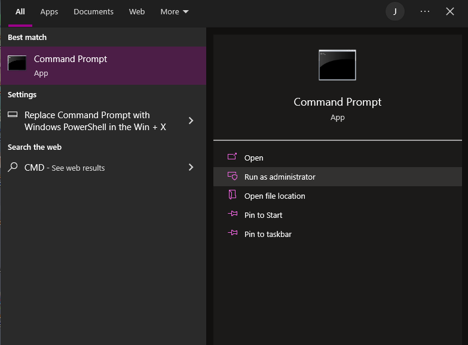
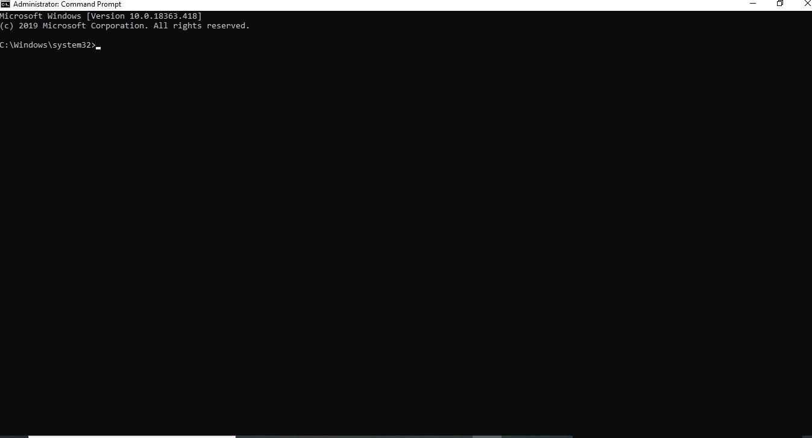
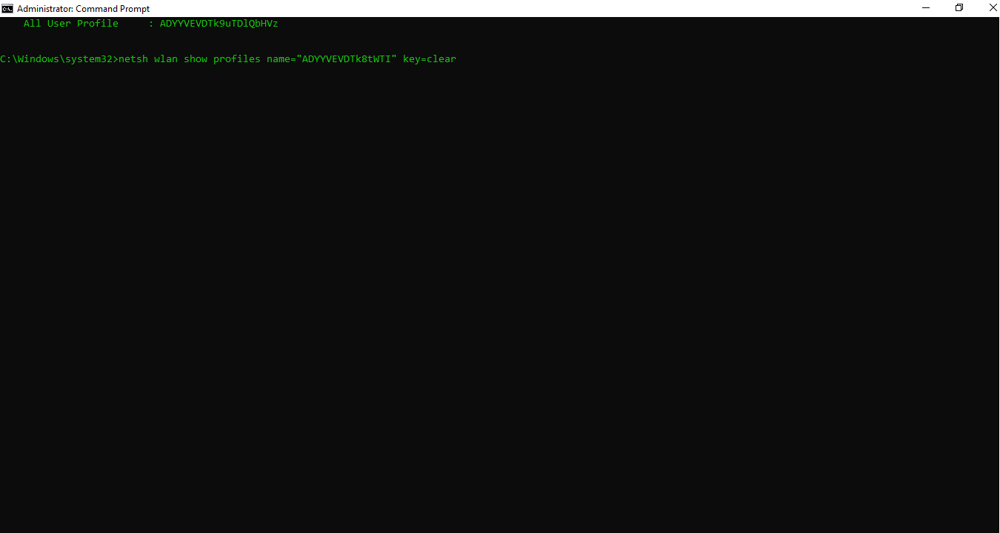
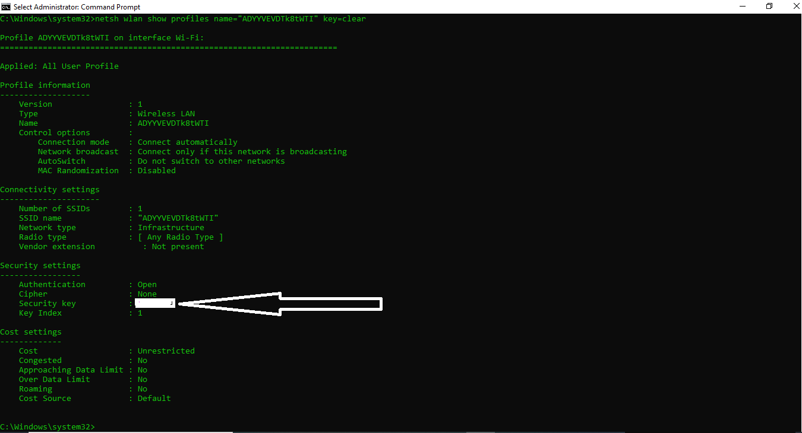

First of all, the problem is, if there's a lock next to the network name, that indicates security is activated. Without a password, you're not going to get access to that network or get to the internet that goes with it.
Perhaps you forgot the password on your own network, or don't have neighbors willing to share their Wi-Fi with you. You could just go to a café, buy a little time, and use the "free" Wi-Fi there but you consider it a waste of time and money.
However, there are other ways to get back on the wireless networks around you. And some require extreme patience, so you can keep reading to get some new tricks that can help you with that.
Using the Windows Command
This trick works to recover a Wi-Fi network password only if you've previously connected to it before and forgot the password.
This works perfectly because Windows creates a profile of every Wi-Fi network to which you connect. If you tell Windows to forget the network, it also forgets the password. With that it won't work, if you forget the network.
It requires that you go into a Windows Command Prompt and access it as Admin
This is a way to access Windows Command Prompt:
First of all, when your PC is booted, your can click on the "Windows" button
Then you can search for "Command Prompt" or "CMD"(Removing the quotes)
Next, you will see a side menu saying
Run as Administrator and
Open
Then click the "Run as Administrator"
Then it opens up a black screen with a blinking cursor showing "C:\WINDOWS\system32\", as shown below:
Photo of search for CMDImages taken by Juvent, 14:25,9:28:2022
Then you can select any color you want to use, all the colors are highlighted below;
It can be any of the following values below:
0 = Black
8 = Gray
1 = Blue
9 = Light Blue
2 = Green
A = Light Green
3 = Aqua
B = Light Aqua
4 = Red
C = Light Red
5 = Purple
D = Light Purple
6 = Yellow
E = Light Yellow
7 = White
F = Bright White
All are written as "color a" or "color 0" or "color 1" and hit enter key
Then write "netsh wlan show profiles" and hit enter key
That will display a section called "User Profiles"—those are all the Wi-Fi networks you've accessed and saved.
Pick the one you want to get the password for, highlight it, and copy it. At the prompt below, type the following: netsh wlan show profile name="(input the network name you copied)" key=clear
In the new data that comes up, look under Security Settings for the line Key Content. The word displayed is the Wi-Fi password or key you are missing. This is as shown below
Images taken by Juvent, 14:25,9:28:2022
You Can also do that on MacOS using the following;
Open up the Spotlight search (Cmd+Space) and type Terminal to get the Mac equivalent of a command prompt, then input the network name(security find-generic-password -wa {network name})
And dont forget! This wont work on someone's WIFI next door, because you haven't connected to it before
Cracking of WIFI password
Searching on "wi-fi password hack," or other variations, lead you to a lot of links. The same goes for many YouTube videos promising you ways to crack a password by visiting a certain website on your phone or PC. Download those programs or visit those sites at your own risk, because many are viruses. We recommend using a PC you can afford to mess up a bit if you go that route, but i don't think is adviceable to do that.
If you want to crack a WIFI, you can use the following:
Kali Linux:
You can run Kali Linux off a CD or USB key without even installing it to your PC's hard drive. It's free and comes with all the tools you'd need to crack a network. It even has an app for Windows in the Windows App Store. If you don't want to install a whole OS, then check out the tried-and-true tools of Wi-Fi hackers.
Reaver-WPS:
Cracking the much stronger WPA/WPA2 passwords is the real trick. Reaver is the one tool that appears to be up to the task. You'll need that command-line comfort again to work with it. After 4 to 10 hours of brute-force attacks, Reaver should be able to reveal a password... but it's only going to work if the router you're going after has both a strong signal and WPS (Wi-Fi Protected Setup) turned on.
WPS is the feature where you can push a button on the router and another button on a Wi-Fi device, and they find each other and link auto-magically, with a fully encrypted connection. It's the "hole" through which Reaver crawls.
Even if you turn off WPS, sometimes it's not completely off, but turning it off is your only recourse if you're worried about hacks on your own router via Reaver. Or, get a router that doesn't support WPS.
When you're really in a pinch for Wi-Fi, cracking the code will probably take too long.
Air Cracker:
Aircrack has been around for many years, going back to when Wi-Fi security was only based on WEP (Wired Equivalent Privacy). WEP was weak even back in the day; it was supplanted in 2004 by WPA (Wi-Fi Protected Access). Air Cracker is labeled as a "suite of tools to assess Wi-Fi network security," so it should be part of any network admin's toolkit. It will take on cracking WEP and WPA-PSK keys. It comes with full documentation and is free, but it's not simple.
To crack a network, you need to have the right kind of Wi-Fi adapter in your computer, one that supports packet injection. You need to be comfortable with the command line and have a lot of patience. Your Wi-Fi adapter and Aircrack have to gather a lot of data to get anywhere close to decrypting the passkey on the network you're targeting. It could take a while.
Interested with the Information? Sign Up Below....